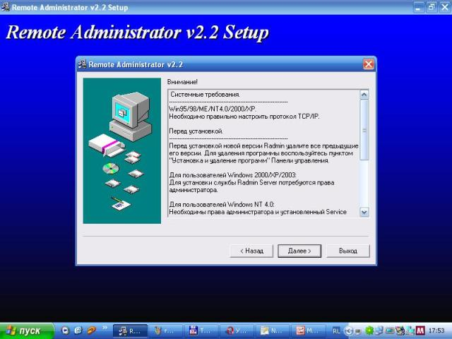

Установка и настройка RAdmin (в Windows XP)05.06.2007
Если нужна помощь администратора - то совсем не обязательно приглашать его к себе домой, он может помочь удалённо! Это будет выглядеть примерно так: пользователь ставит на свой компьютер определённую программу (RAdmin server) и через неё по паролю администратор сети может помочь настроить вам ваш компьютер, при этом у него полная компия вашего компьютера: он управляет вашей клавиатурой, мышью, файлами, как будто бы сидит за вашим компьютером. Это очень удобно. Причём пользователь в любой момент может удалить RAdmin или сменить пароль - тогда никто не сможет "залезть" к нему на компьютер.
Для начала научимся устанавливать и настраивать RAdmin. Для начала нужно скачать RAdmin 2.2 и запустите скачанное приложение. Итак, перед нами первый шаг установки:

С умным видом всё это читаем и жмём "Далее"
")
Теперь перед нами второй шаг инсталляции:

Если нечего делать - можете прочитать условия лицензионного соглашения. Не забудьте установить птичку "Я принимаю это соглашение"!!! Жмём "Далее". Теперь перед нами 3 шаг установки:

Опять с умным видом читаем эту муру. Если в вашей сиситеме чего-то не хвает (из перечисленного), то лучше не ставить RAdmin. Но скорее всего у вас всё нормально - жмём "Далее". Вот скриншот 4 шага установки:

Здесь по умолчанию стоит 2 галочки: "Установить Remote Administrator Viewer" и "Установить Remote Administrator Server". Viewer вам абсолютно не нужен - уберите эту галочку. Он нужен лишь администраторам, которые будут вам помогать. Нажимаем "Далее". Теперь мы перешли к 5 шагу установки:

Здесь нужно выбрать директорию, куда будет установлен RAdmin. Если вас не устраивает директория по умолчанию - смените её. Нажимаем "Начать" и ждём, пока RAdmin установится. После этого запустится "Авторизация Remote Administrator Server". Это окно одно из самых важных. Смотрим скриншот № 6:

Скриншот № 6
Не включайте опцию NT security!!! В качестве защиты будет использован пароль. Его вы должны придумать сами. Он должен будь не короче 8 символов, и желательно, чтобы он был нетривиальным. После того, как придумали пароль (например: ngpasyt4lsdng3)
вы должны его запомнить и ввести в верхнее и нижнее поля. Пароль должен совпадать.
ВНИМАНИЕ, вы не должны забыть этот пароль. После того как введён пароль, нажимаем кнопку "ОК". После этого вас спросит, перезагрузить ли компьютер. Отвечаем "Да". После перезагрузки в трее появится новая иконка. Собственно, уже можно пользоваться RAdmin'ом, но мы доведём его до ума

Итак, запускаем настройку RAdmin'a ("Пуск"->"Все программы"->"Remote Administrator v2.2"->"Настройка Remote Administrator server"). После этого регистрируем RAdmin ("Ввести регистрационный ключ") и вводим КЛЮЧ (который можно купить на сайте программы, либо найти в поисковике). Вводим ключ, жмём "ОК". Перезагружаем настройку RAdmin'a. Жмём на кнопку "Опции...":

Ставим галочку "Не показывать значок". Этим вы уберёте лишний значёк из трея. После этого жмём "ОК".
В этом же окне, если нажать "Авторизация" можно сменить пароль доступа пароля к RAdmin'y.
Ну вот вы и настроили RAdmin. Теперь, если хотите чтобы какой-нибудь из администраторов помог вам, обращаетесь к нему в чате, говорите пароль и что нужно сделать.
 Дмитрий 30.08.2007
Дмитрий 30.08.2007
А как настроить это прогу под 2000 винду
 DeXPeriX ( DeXPeriXxp@jabber.ru ) 30.08.2007
DeXPeriX ( DeXPeriXxp@jabber.ru ) 30.08.2007
 | Думаю, примерно также, как под ХР Ведь инсталлятор то один и тот же... |
Diablo (  415214892 ) 20.10.2008
415214892 ) 20.10.2008
А как клиентскую часть настроить ?